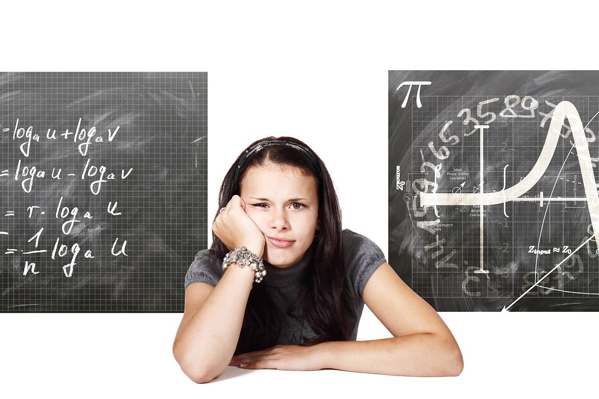
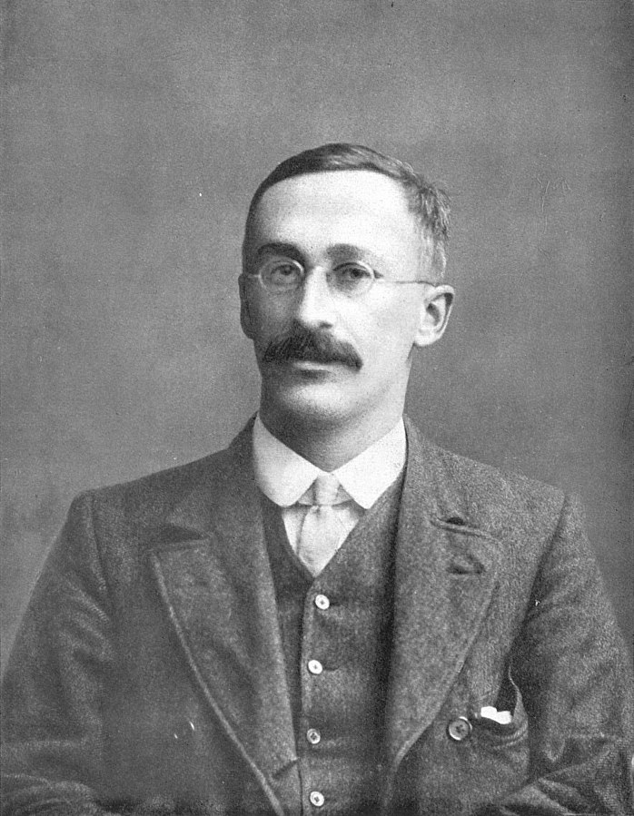
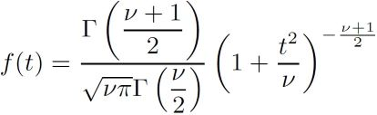
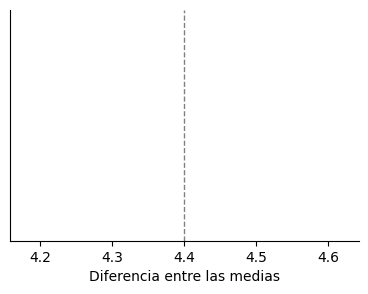
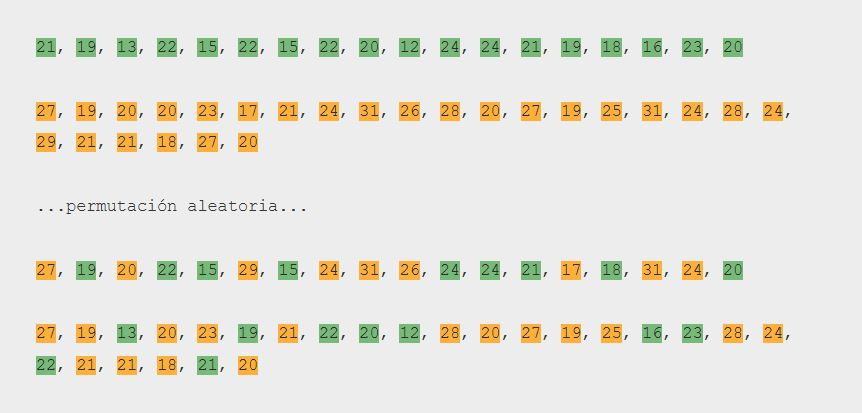
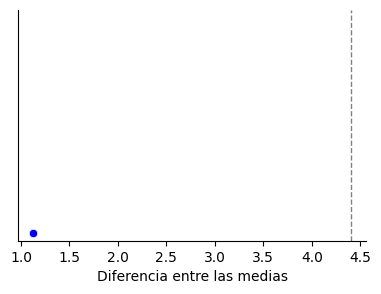
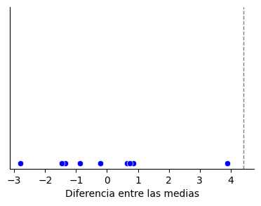
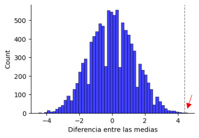
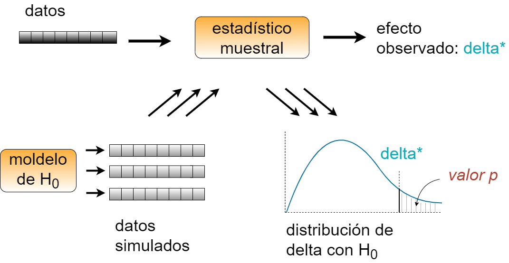

Estadística computacional: la estadística sin dolor#

2024-04-25
Desde antiguo, las matemáticas se han servido de dos estrategias diferentes a la hora encontrar soluciones a problemas concretos: fuerza bruta o métodos analíticos. Hasta no hace tanto, la fuerza bruta era sinónimo de cálculos aritméticos llevados a cabo por humanos, un procedimiento que resultaba inviable en problemas mínimamente complejos. Por ello, generaciones de matemáticos brillantes tuvieron que inventar fórmulas alternativas para llegar a las soluciones. El uso de métodos analíticos necesitaba en cada caso asumir condiciones y hacer simplificaciones sobre el problema al cual se aplicaba, unas instrucciones que se convertían en sí mismas en una teoría sofisticada.
Sin embargo, desde hace un tiempo, la disponibilidad de los ordenadores y su capacidad de computación ha hecho que el planteamiento de la fuerza bruta haya ganado protagonismo en las matemáticas. Los métodos numéricos además ya no son exclusivos de las universidades y los centros de investigación, porque la facilidad de acceso a potentes procesadores y herramientas de programación ha permitido que cualquiera pueda simular un problema complejo a golpe de cálculos reiterativos.
La estadística se ha beneficiado especialmente de este cambio de paradigma, puesto que sus practicantes se pueden liberar de la complejidad de la teoría analítica, en la que realmente no se sabe muy bien qué es lo que se está haciendo, y centrarse en cambio en resolver el problema de una manera más intuitiva. La mayoría de los métodos analíticos no son fáciles de comprender y se limitan a describir cuándo y cómo aplicar las fórmulas, lo cual lleva a la frustración de los que buscan asimilar las ideas fundamentales que las sustentan.
Mediante la computación, sin embargo, la estadística puede convertirse en «elegantes algoritmos en lugar de confusas masas de ecuaciones». Lo explica de forma muy simple un científico de datos llamado John Rauser en su charla titulada Statistics Without the Agonizing Pain (traducible quizá como «Estadística sin la dolorosa lucha»).
¿Te pican más los mosquitos si bebes cerveza?#
En el vídeo, John Rauser se vale de un ejemplo para explicar la idea. Presenta un estudio en el que la pregunta de partida es: ¿Te vuelves más atractivo a los mosquitos si bebes cerveza? Se plantea un experimento con dos grupos de personas, unas que beben agua (18 participantes) y otras cerveza (25). Y a continuación la prueba computa la cantidad de mosquitos que ha atraído cada individuo. Los resultados se muestran en las siguientes listas:
agua = [21, 19, 13, 22, 15, 22, 15, 22, 20, 12, 24, 24, 21, 19, 18, 16, 23, 20]
media = 19.2
cerveza = [27, 19, 20, 20, 23, 17, 21, 24, 31, 26, 28, 20, 27, 19, 25, 31, 24, 28, 24, 29, 21, 21, 18, 27, 20]
media = 23.6
Es decir, los que bebieron agua atrajeron una media de 19.2 mosquitos, mientras que los que bebieron cerveza recibieron las visita de un promedio de 23.6 mosquitos. Entre estos dos grupos se produce una diferencia de 23.6 – 19.2 = 4.4 mosquitos a favor de los que bebieron cerveza. Y aquí es cuando surge la pregunta estadística: ¿es la diferencia obtenida de estas muestras suficiente para declarar que, en términos generales, beber cerveza te hace más atractivo para los mosquitos?
En opinión del escéptico, esta diferencia de 4.4 mosquitos es pequeña y podría haberse dado por casualidad, sin que el consumo de cerveza influyera en ello:
→ H0 (hipótesis nula): La cerveza no influye en la cantidad de mosquitos atraídos.
La postura contraria defendería que 4.4 mosquitos es una diferencia considerable que rara vez ocurriría por azar y que por tanto la cerveza sí tiene efecto:
→ HA (hipótesis alternativa): beber cerveza atrae a los mosquitos.
Lo cierto es que no podemos saber si la diferencia observada entre estos dos grupos o muestras ocurrió por azar o no, pero lo que sí puede hacer la estadística por nosotros es calcular la probabilidad (valor-p) de que dicha diferencia contemplada fuera resultado de la fortuna (ruido, es decir: H0) o bien respondiera a una realidad de la población (patrón, es decir: HA).
Método analítico#
Para este tipo de problemas, utilizaríamos un test llamado prueba t de Student o Test-T. El nombre procede de un señor llamado William Sealy Gosset, quien a principios del siglo XX trabajaba para la fábrica de Guiness en Dublin y desarrolló un método analítico para averiguar la calidad de la cerveza partiendo de pequeñas muestras. Para no dar pistas a la competencia, William Sealy Gosset publicó su trabajo bajo el seudónimo de Student (estudiante), y de ahí el nombre del test.

Su método proporciona una serie de ecuaciones, entre las cuales se encuentra la siguiente:

Con esta ecuación se obtiene la distribución de probabilidades, en la cual habría que situar la probabilidad asociada a la muestra observada. Un valor-p muy bajo (típicamente inferior a 0.05 o 5%) indicaría que las probabilidades de que el fenómeno observado fuera fruto del azar serían muy bajas, más bajas cuanto más pequeño el valor-p. Tan bajas que, en el problema de los mosquitos y la cerveza, la asunción de la hipótesis nula (H0: La cerveza no influye en la cantidad de mosquitos atraídos) nos parecería incluso ridícula por sus escasas probabilidades de suceder, de manera que nos decantaríamos por la hipótesis alternativa (HA : beber cerveza atrae a los mosquitos).
Afortunadamente, hoy no hay necesidad de coger papel y lápiz para ponerse a hacer los cálculos a mano. Un programa escrito en el lenguaje Python resolvería la cuestión en un par de líneas de código utilizando la función correspondiente de la librería estadística.
# Import statistical package
import scipy.stats as stats
# Perform the two-sample t-test
t_result= stats.ttest_ind(agua, cerveza)
print(f"p = {t_result[1]:.4f}")
p = 0.0009
El valor-p obtenido en este caso resulta ser muy pequeño, de forma que refutaríamos H0 para abrazar HA.
Pero ¿en qué han consistido exactamente estos cálculos? Ni idea. Yo al menos no lo sabría explicar. Todo lo que tengo es el resultado. Elegí utilizar la prueba t de Student o Test-T porque es la receta que nos dicen que tenemos que utilizar en este tipo de problemas, pero alcanzamos a saber poco de cómo funciona (al menos si no hemos profundizado y somos expertos en estadística).
Método computacional#
La alternativa es utilizar un método computacional, también llamado de simulación. Lo que queremos dilucidar es si el valor observado, 4.4, es una diferencia pequeña o grande. Empecemos por plasmarlo en una gráfica.

Tomemos los datos de las muestras, coloreadas dependiendo de si el sujeto tomó agua o cerveza. Y ahora supongamos que es cierta la hipótesis nula H0: no hay diferencia alguna entre los dos grupos. Entonces, si es cierto esto, podríamos mezclar todos estos datos entre sí como quien baraja unos naipes y después repartir las cartas a los dos jugadores según la proporción inicial. Una permutación aleatoria, en términos matemáticos.

A continuación calculamos los valores medios de los dos grupos y la diferencia entre ellos. En este caso la diferencia obtenida es de 1.1 mosquitos más o menos.

Hacemos lo mismo 10 veces, permutamos y calculamos la diferencia en las medias: obtenemos unos valores que van desde los casi-3 mosquitos (en este caso a favor del agua) hasta casi 4 mosquitos. Nos damos cuenta de que después de 10 ensayos aleatorios ninguno de ellos ha arrojado un valor de diferencia igual o superior al observado en el experimento real, que era 4.4 mosquitos.

Repetimos la simulación 10000 veces y dibujamos los resultados en un histograma, el cual hace el recuento de los mismos por intervalos. Como es un ensayo que se ha repetido muchas veces, la gráfica es una distribución de la probabilidad. Observamos que, asumiendo H0, lo más probable es que estas simulaciones den como resultado una la diferencia nula entre las medias.

¿Y qué probabilidad hay de que salga una diferencia de 4.4 o mayor? La parte que queda a la derecha de la línea vertical contiene la cantidad de veces en que se dio esa diferencia después de 10000 ensayos aleatorios. Si los contamos, veremos que han sido 3 las ocasiones en las que esto ha sucedido, lo cual arroja una probabilidad de 3 /10000 → p = 0.0003. Es decir, se observa que esto ocurre muy, muy raramente. Tan raro es que nos atrevemos a decir que las muestras deben de pertenecer a dos poblaciones diferentes y por lo tanto rechazamos la hipótesis H0 (los resultados eran puramente fortuitos, no existe diferencia) para abrazar la HA, la cual propone que sí hay una diferencia que no es debida al azar: es decir, los mosquitos se ven atraídos por los que beben cerveza.
Solo existe un test estadístico#
Tal como describe este artículo, atendiendo al planteamiento de la simulación computacional, solo existiría un único esquema para la totalidad de los tests estadísticos, y sería el siguiente:

Los elementos que lo componen son los siguientes:
A partir de un conjunto de datos se calcula un estadístico muestral que mide la magnitud del supuesto efecto. Por ejemplo, si estás describiendo la diferencia entre dos grupos, el estadístico podría ser la diferencia entre sus valores medios.
A continuación se define una hipótesis nula (H0), que es un modelo del mundo que considera que el efecto observado no responde a un patrón real, sino que es producto del azar. Por ejemplo, si se sospecha que podría haber una diferencia entre los dos grupos, la hipótesis nula asumiría que, a pesar de haberlo visto en las muestras, entre las poblaciones no existe tal diferencia.
El modelo de la hipótesis nula debería ser estocástico, en el sentido de que sea capaz de generar conjuntos de datos aleatorios similares a los datos de origen. Existen en este sentido varios modelos H0 que se denominan de «remuestreo» (resampling), entre los que destacan:
Test permutacional aleatorio: es el empleado en el ejemplo de los mosquitos, el que considera que no hay ninguna diferencia en absoluto entre los dos grupos.
Bootstrapping: menos restrictivo que el permutacional, el bootstrapping asume solamente que las medias de los dos grupos son iguales, sin considerar cómo están distribuidos los datos.
El objetivo del test de hipótesis es calcular un valor-p, el cual es la probabilidad de ver un efecto igual o mayor que el observado bajo el planteamiento en el que se toma por cierta la hipótesis nula.
Finalmente, después de repetir la operación miles, decenas de miles o millones de veces, se cuenta las veces en que el estadístico superó el valor experimental y se divide por el número de iteraciones. Este valor fraccional se aproxima al valor-p. Si es muy pequeño, tan pequeño que haga que la asunción de H0 como cierta parezca ridícula, entonces se puede concluir que el efecto constatado en el experimento es muy poco probable que sea debido al azar.
Y eso es todo. Todos los tests de hipótesis caben en este esquema. La razón por la cual en la estadística analítica existen tantos nombres y tantos tests es que cada uno corresponde a:
Un estadístico muestral
Un modelo para la hipótesis nula
Y habitualmente un método analítico que calcula o aproxima el valor-p.
Los métodos analíticos, imprescindibles cuando no se disponía el recurso de la computación, resultan ahora menos atractivos porque:
Son inflexibles: al elegir uno de ellos te comprometes con un estadístico muestral concreto y un modelo concreto para la hipótesis nula. Y puede que no exista un método analítico para un caso particular. Sin embargo, la estadística computacional es muy flexible porque es fácil probar varios estadísticos y modelos de manera que se pueda elegir el más apropiado. Y si diferentes modelos aportan resultados diferentes, es un buen aviso de que el problema está abierto a la interpretación.
Son opacos: la hipótesis nula es un modelo, lo que quiere decir que es una simplificación del mundo real. En la mayoría de los tests analíticos estándar, estas suposiciones están implícitas y no es fácil saber si un modelo encaja en un escenario en concreto. Una de las ventajas más importantes de los métodos de simulación es que hacen explícito el modelo. Cuando creas una simulación estás obligado a pensar acerca de las decisiones que tomas sobre el modelado, y las propias simulaciones documentan esas decisiones.
Conclusión#
Para llevar a cabo una prueba estadística computacional, necesitamos de tres elementos esenciales:
Habilidad para plantear y conducir un simple argumento lógico. (nacimos con ello ✔)
Generación aleatoria de números. (lo hace el ordenador ✔)
Iteración. (lo hace el ordenador ✔)
De manera que si sabemos programar (en Python, por ejemplo), tenemos en nuestra mano la posibilidad de entender lo que estamos haciendo a un nivel profundo y elemental. Se podría decir que los ordenadores nos facilitan un superpoder para comprender la estadística. Porque nos permiten jugar con sus ideas fundamentales y abrazar su práctica desde una posición de gusto y alegría, y no desde el miedo y las dudas.
(Imagen de portada de Gerd Altmann en Pixabay.)